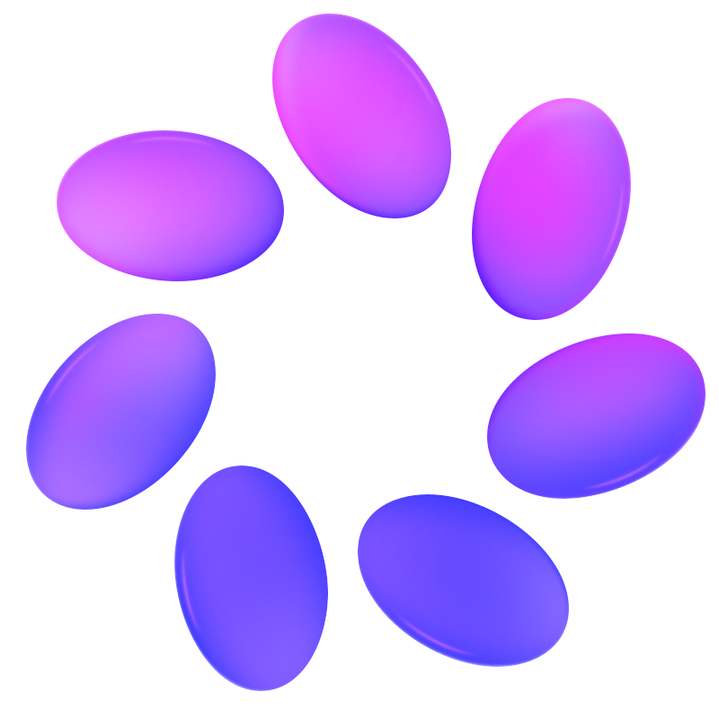

Curso de IA · Aula 1
O que é IAe qual usar
A IA escreve bem. Você confere como?
Roteiro
Entender vem antes de escolher
- 1o que é
- 2como funciona
- 3onde tropeça
- 4qual usar
- 5aberto ou fechado
O que é IA
IA imita capacidades humanas
Sistema que recebe dados, acha padrões e gera previsões ou conteúdo.
Entrada
dados
Foto da placa de um carro.
Saída
previsão ou conteúdo
O texto da placa.
O que é IA
A OCDE define IA em cinco partes
- “baseado em máquina”
- “objetivos explícitos ou implícitos”
- “infere, do que recebe, como gerar saídas”
- “previsões, conteúdos, recomendações, decisões”
- “autonomia e adaptação variam”
É programa de computador, não pessoa nem regra no papel.
Persegue um alvo, dado por alguém ou embutido no treino.
Não segue receita fixa: deduz a resposta do que recebe.
O que sai tem efeito no mundo, físico ou virtual.
Uns agem sozinhos, outros não; uns mudam com o uso.
tradução livre
O que é IA
O PL 2338 ajusta a OCDE
- “baseado em máquina”
- “graus diferentes de autonomia”
- “objetivos explícitos ou implícitos”
- “infere, dos dados que recebe, resultados”
- “ambiente virtual, físico ou real”
Como na OCDE: programa de computador.
Novo: a autonomia entra na definição.
Como na OCDE: persegue um alvo.
Deduz a resposta do que recebe.
Novo: acrescenta o ambiente real.
Senado aprovou em 10/12/2024; Câmara aguarda parecer.
Cotidiano
Você já usaIA todo dia
Waze, Netflix, spam, rosto, teclado.
O que é IA
Regras escritas ou padrões aprendidos
Regras
IA simbólica
Pessoas escrevem: palavra suspeita no e-mail, então é spam.
Padrões
aprendizado de máquina
O sistema vê milhares de e-mails marcados e aprende sozinho.
O que é IA
A IA tem 70 anos; o ChatGPT, quase 4
- 1956IA simbólica
- anos 80sistemas especialistas
- anos 90aprendizado de máquina
- 2012aprendizado profundo
- 2017transformers
- 2022ChatGPT
No caminho, GPT-3 em 2020; GPT-6 em 07/10/2026.
Específica faz uma;generalista, várias
Uso geral, não IA geral (AGI).
Prática 1, 3 min
Você classifica seis sistemas
Ao sinal
1 dedo: específica. 2 dedos: generalista.
- 1radar de placas
- 2ChatGPT
- 3filtro de spam
- 4recomendação de loja
- 5Gemini
- 6detector de fraude no cartão
Voluntário: tarefa do filtro e da recomendação.
Prática 1
Quatro específicas, duas generalistas
específica:
uma tarefa
generalista:
várias tarefas
Vale o sistema descrito, não o nome do produto.
O que é IA
A generativa cria, não só classifica
Texto
minuta de ofício
Imagem
fluxograma do rito
Áudio
ementa lida em voz
Código
fórmula de prazo na planilha
exemplos ilustrativos
O que é IA
Parececriatividade;é previsão
Como funciona
Pesos, tokens, previsão e a mesa.
Como funciona
Ela treinou com trilhões de pedaços
+32 trilhões
de tokens (pedaços de texto)
DeepSeek V4, 2026: mais de 32 trilhões (ficha oficial, Hugging Face).
Como funciona
Os de ponta passam de 1 trilhão de pesos
Uma rede neural é feita de bilhões de botões de ajuste: os pesos, ou parâmetros.
Treinar é girar esses botões até as respostas ficarem boas.
Claude, GPT e Gemini não divulgam o tamanho.
Fichas oficiais, lidas em 23/10/2026.
Como funciona
O treino ajusta os pesos
Pesos, ou parâmetros: números ajustados no treino, não textos salvos.
Texto real, inteiro
Os pesos
O modelo vê só isto
Palpite da palavra
errou
corrige os botões
No uso, os botões ficam parados: sua mensagem passa por eles e vira a resposta.
Como funciona
Depois, o reforço: notas, não gabarito
Aqui não há texto certo para copiar; há uma nota para cada resposta.
Os pesos
favorece respostas como a A
A nota vem de pessoas que comparam respostas ou de uma conferência automática.
Como funciona
Sem busca,ela calcula;não consulta
Como funciona
Ela lê pedaços, não palavras
4tokens
8tokens
Tokenizador da OpenAI (o200k_base), medido em 22/10/2026.
Como funciona
Parecer de 3 páginas: 2.056 tokens
2.056
tokens em 1.486 palavras: 1,38 por palavra
Parecer fictício; tokenizador da OpenAI (o200k_base), 22/10/2026.
Prática 2, 4 min
Palavras viram blocos na tela
Cole só esta frase
O réu agravou da decisão.
- 1Abra o tokenizador e cole a frase.
- 2Conte os blocos coloridos.
Como funciona
Cada token vira uma lista de números
→
É a posição do token num mapa de significados, escrita em números.
Sentei no banco da praça.
Abri conta no banco.
Mapa de significados, simplificado
Valores ilustrativos; na prática são milhares de números por token.
Como funciona
A IA prevê um token por vez
- publicada
- proferida
- anulada
- ontem
- hoje
- em
probabilidades inventadas para explicar
Prática 3, 3 min
O mesmo pedido pode variar
Pedido
Complete com uma frase: O juiz julgou o pedido
- 1Envie no Claude ou no ChatGPT.
- 2Nova conversa; repita duas vezes.
- 3Anote: igual ou diferente?
Sem botão: veja as tentativas projetadas.
Como funciona
Cada resposta é um sorteio com pesos
- procedente
- improcedente
- parcialmente
- prejudicado
sorteada, não a mais provável
O que vimos no appFinais diferentes para o mesmo pedido.
mecanismo ilustrado, valores inventados
Como funciona
A janela de contexto é a mesa
a mesa: o que a IA vê agora
não coube: fica de fora
Como funciona
A mesa tem tamanho
1 milhão
de tokens: mais de mil páginas
Claude Opus 5.5, planos pagos (ajuda da Anthropic, out/2026).
Como funciona
Passou do limite, algo fica de fora
Cabe
histórico dentro da mesa
Tudo entra na mesa.
Não cabe
histórico maior que a mesa
O começo é resumido ou deixado de fora.
Como funciona
Quanto maior o texto, mais o acerto cai
Achar uma frase solta é fácil; ligar dados espalhados num texto longo ainda falha.
GPT-4o no teste NoLiMa (2025); ver também Chroma (2025) e Anthropic (2026).
Contexto
Conversa nova,mesa limpa
Salvo memória ligada: veja as configurações.
Memória
A memória leva notas à conversa nova
memória: notas sobre você
conversa nova
O app escolhe o que parece útil e põe na mesa.
ChatGPT: memórias salvas e conversas anteriores. Claude: tópicos e busca.
Memória
Você vê, corrige e apaga a memória
ChatGPT
configurações, personalização
Conversa temporária: não cria memória nem fica no histórico.
Claude
configurações, memória
Conversa anônima: não cria memória nem fica no histórico.
Memória e sigilo
Apagar a conversa não apaga a memória
ajuda da OpenAI
ajuda da Anthropic
Dado de processo pode virar memória.
Temporária guarda cópia por até 30 dias.
Apagar a conversa não apaga a memória.
Como funciona
Do corpus à resposta, em cinco passos
- 1corpus treina
- 2treino ajusta os pesos
- 3pedido vira tokens
- 4tudo entra na mesa
- 5previsão gera a resposta
Onde brilha
Ela vai bem em linguagem
Resumir, rascunhar,traduzir, explicar,classificar
Onde tropeça
Ela inventa com a mesma confiança
ordem de sanção
Mata v. Avianca, Nova York, 2023
Seis decisões citadas não existiam.
Mantiveram as citações após o alerta.
Multa de US$ 5.000, em 22/06/2023.
“Varghese”, “Shaboon”, “Martinez”
inventadas pelo ChatGPT
Prática 4, 6 min
Você confere se o acórdão existe
Cite 3 acórdãos do STJ, com número, sobre responsabilidade civil do Estado por omissão
- 1Busca desligada, se der.
- 2Confira na pesquisa do STJ.
- 3Diga: confere, não encontrei, tema diferente.
Prática 4
Os númerosconferiram?
não encontreitema diferenteconfere
Onde tropeça
A fronteira da IA é irregular
dentro
minutar ofício
resumir petição
listar argumentos
fora
conferir precedente
prazo com feriado local
cruzar documentos dos autos
Fora dela, o acerto caiu de 84,5% para 60–70%.
Dell'Acqua et al., 2023 e 2026.
exemplos do professor
Onde tropeça
Quem usa responde pelo que entrega
- 1dar contexto
- 2supervisionar
- 3validar
- 4corrigir
Tendência
Hoje é a pior IAque você usará
Qual a melhor IA
Melhor para quê?
Qual a melhor IA
Benchmark é o ENEM da IA
0 de 10
ilustrativo
Qual a melhor IA
Seis coisas que os benchmarks medem
Raciocínio
problemas em etapas
Programação
escrever e corrigir código
Agentes
tarefas com ferramentas
Contexto longo
documentos enormes
Instruções
seguir o formato pedido
Confiabilidade
não inventar
Qual a melhor IA
No índice geral, o Opus 5.5 vai à frente
Nota de 0 a 100 em dez provas; o eixo começa em 50.
Intelligence Index v4.3.2, 22/10/2026; melhor variante de cada modelo.
Qual a melhor IA
O índice jurídico pesa seis habilidades
Nota de 0 a 100 em tarefas jurídicas, quase todas estrangeiras.
35%conhecimento jurídico
25%trabalho de agente
15%raciocínio
10%textos longos
10%não inventar
5%ferramentas
Artificial Analysis, metodologia lida em 22/10/2026.
Qual a melhor IA
No índice jurídico, o Opus 5.5 lidera
Legal Index, 22/10/2026; uma variante por modelo; eixo a partir de 50.
Limite
Prova não éprocesso
No caso real, nada vem limpo.
Qual a melhor IA
Na arena, pessoas votam às cegas
- 1uma pergunta
- 2duas respostas sem nome
- 3a pessoa vota
- 4os nomes aparecem
Os votos formam o placar: arena.ai
Qual a melhor IA
Na conversa, o Gemini 4 Argon lidera
Pontos dos votos às cegas; o eixo começa em 1490.
arena.ai, Text Arena: 8.946.356 votos, 22/10/2026; Gemini, preliminar.
Qual a melhor IA
Como agente, o Opus 5.5 abre vantagem
Pontos percentuais acima do modelo médio, em tarefas reais.
arena.ai, Top 10 Agents: 367.936.358 sessões, 22/10/2026.
Qual a melhor IA
Benchmark medeprova; arena,preferência
Qual a melhor IA
Demos a prova da PGE às IAs
180
pontos: prova discursiva da PGE-MS, 2021
12 dissertativas de 10
1 parecer de 30
1 peça de 30
Correção: dois modelos Gemma 4, com gabarito e espelho.
Qual a melhor IA
Nesta prova, o topo ficou próximo
91,7
90,9
88,7
86,8
83,4
79,4
78,0
77,8
75,5
64,4
% dos 180 pontos; 1 prova (PGE-MS 2021), correção por IA, não é ranking geral
Qual a melhor IA
O que essa nota não diz
Prova
o que ela mede
Uma prova só; a de 2021 pode ter sido vista no treino.
Correção
quem deu a nota
Feita por modelo, não por banca; prova não é trabalho.
Fechados e abertos
Onde o modelo roda.
Fechados e abertos
Aberto é ter os pesos
Fechado
só pelo serviço
Você usa pelo app ou sistema de quem vende.
Aberto
pesos: os parâmetros
Baixados e rodados em servidor próprio, conforme licença, configuração e controles do órgão.
Mercado
Os principais modelos fechados
empresa, família e produto
OpenAI
GPT-6
ChatGPT

Anthropic
Claude 5.5
Claude

Gemini 4
Gemini
xAI (SpaceXSI)
Grok 4.7
Grok

Meta
Muse Spark
Meta AI
Microsoft
GPT e Claude
Copilot
Família mais recente em 22/10/2026; o modelo varia por plano.
Mercado
Os principais modelos abertos
família e empresa

Muse Spark Open
Meta; também Llama 4

Gemma 4
gpt-oss
OpenAI

DeepSeek V4
DeepSeek
Qwen3.8
Alibaba

Large 3
Mistral

Kimi K3
Moonshot
GLM-5.3
Z.ai
Seleção verificada em 22/10/2026.
Mercado
Na ponta, EUA e China disputam
EUA
fechados do topo e abertos
OpenAI, Anthropic, Google, xAI, Meta, Microsoft
China
abertos fortes
DeepSeek, Alibaba, Moonshot, Z.ai
Na Europa, a francesa Mistral.
Para levar
Escolha por tarefae teste você
- 1Teste com o seu material.
- 2Use mais de uma IA.
- 3Confira na fonte, sempre.
Aula 2: como pedir bem.
Curso de IA
Obrigado
Intervalo agora; depois, a Aula 2.